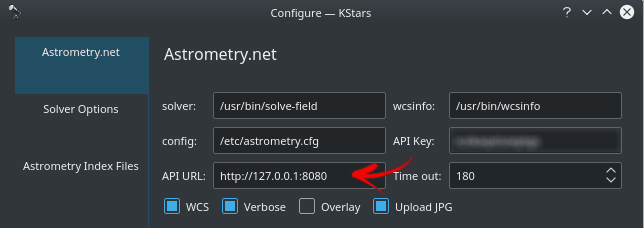

Le module d'alignement d'Ekos permet des GOTO hautement précis et peut mesurer et corriger les erreurs d'alignement polaire. Cela est possible grâce aux technologies tierce de résolution. L'application principale de résolution utilisée est StellarSolver qui utilise elle-même la version hors ligne (et en ligne) de astrometry.net, ASTAP et les résolveurs Watney. Ekos commence par acquérir une image d'un champ d'étoiles qui est ensuite transmise au résolveur choisi (voir p. ex. astrometry.net, StellarSolver ou ASTAP) et obtiendra les coordonnées centrales (AD et DEC), l'échelle et l'orientation de l'image. Le résolveur réalise essentiellement une reconnaissance de motifs à l'aide d'un catalogue de millions d'étoiles. Une fois que ces coordonnées sont déterminées, le vrai pointage du télescope est connu.
Il y a souvent une différence entre l'endroit où le télescope croit pointer et où il pointe vraiment. L'importance de cette différence peut varier de quelques minutes d'arc à quelques degrés. Ekos peut corriger cette différence en synchronisant aux nouvelles coordonnées et ensuite en pivotant vers la cible demandée à l'origine.
De plus, Ekos fournit un outil d'assistant d'alignement polaire pour corriger les erreurs d'alignement polaire. Il prend trois images, se déplace entre elles et calcule le décalage entre l'axe de la monture et l'axe polaire. Il renvoie ensuite à l'opérateur les ajustements en altitude et en azimut nécessaires pour aligner ces axes. Ces images sont typiquement prises près du pôle céleste (près de l'étoile polaire dans l'hémisphère nord) mais elles peuvent être également prises ailleurs, généralement près du méridien et bougeant vers l'est ou l'ouest.
Vous avez besoin au minimum d'une caméra CCD ou d'une webcam et d'un télescope qui gère les commandes de pointage et de synchronisation. La plupart de télescopes trouvés dans le commerce aujourd'hui gère ces commandes.
Avec le module d'alignement d'Ekos, l'alignement de la monture sur une, deux ou trois étoiles avec la commande de la monture n'est pas strictement nécessaire, mais pour certaines montures, il peut être recommandé de réaliser un alignement sommaire sur une ou deux étoiles avant d'utiliser le module d'alignement de Ekos. Mais si vous utiliser « EQMod », vous pouvez commencer d'utiliser tout de suite le module d'alignement. Une marche à suivre typique pour les alignement GOTO implique les étapes suivantes :
Démarrez KStars et Ekos et établir la connexion avec INDI.
Dé-parquez votre monture de sa position initiale (généralement pointée vers le pôle céleste nord pour les montures équatoriales).
Pivotez vers une étoile brillante en utilisant la commande de pivotage du télescope de la carte du ciel avec la commande Pivoter le télescope vers la position de la souris.
Sélectionnez Pivoter vers cible pour l'option Action du résolveur du module Alignement.
Après que le pivotage soit terminé, cliquez sur le bouton du module Alignement.
Le module Alignement procédera à l'acquisition d'une image et essaiera de la résoudre. Si la résolution est un succès, Ekos va se synchroniser et ensuite pivoter vers l'étoile. Les résultats sont affichés dans l'onglet Résultats de la solution ainsi que dans un diagramme qui montre le décalage entre les coordonnées rapportées du télescope (c'est-à-dire où le télescope croit qu'il pointe) et la position actuelle dans le ciel déterminée par le résolveur. L'alignement s'arrêtera s'il se trouve dans la tolérance désirée, sinon la procédure répétera les opérations de pivotage/acquisition/résolution/synchronisation jusqu'à se trouver dans la tolérance désirée.
Chaque fois que la résolution s'est terminée avec succès, Ekos peut exécuter les actions suivantes :
Synchroniser : synchronise les coordonnées du télescope avec les coordonnées de la solution.
Pivoter vers la cible : synchronise les coordonnées du télescope avec les coordonnées de la solution puis pivote vers la cible.
Rien : résolution de l'image et affichage des coordonnées de la solution.
Pour utiliser les résolveurs, il faut d'abord configurer les options de StellarSolver. La page ci-dessus est affichée en cliquant sur le bouton Options situé en bas à droite du module Alignement, puis en sélectionnant l'onglet Options de StellarSolver. Commencez avec la méthode interne du résolveur nommé Méthode d'extraction des sources afin que chaque résolveur puisse utiliser son code préféré d'extraction d'étoiles. Pour Méthode d'extraction, nous recommandons de choisir Résolveur internet pour utiliser le code de Astrometry.net dédié à StellarSolver ou choisissez ASTAP local si vous préférez utiliser cela. Le résolveur en ligne est précis mais prend du temps puisqu'il faut télécharger toutes les données. Pour Options du profil, démarrez avec le profil 1-Défaut.
Il existe deux autres options mineures. WCS : le système de coordonnées mondiales (World-Coordinate-System) est un mécanisme permettant d'intégrer les coordonnées équatoriales à une image. Ainsi, lors de l'affichage d'une image, un survol affiche les coordonnées de chaque pixel. Vous pouvez également cliquer n'importe où dans l'image et ordonner au télescope de pivoter vers ce point. Il est hautement recommandé de conserver cette option activée. L'option Superposition permet de superposer les images acquises sur la carte du ciel de KStars.
Cela n'est obligatoire que si vous choisissez des programmes externes pour votre Méthode de résolution. Si vous choisissez Résolveur interne, cela n'est pas nécessaire.
Il faudra vous assurer que les chemins sont corrects pour le résolveur que vous avez choisi. L'option du menu du haut Sélectionner pour charger un des ensembles par défaut configure généralement les boîtes correctement.
Cette page indique à Ekos si vous souhaitez contraindre la résolution en tenant compte de l'échelle et de la position.
L'échelle peut être la largeur de l'image en degrés (dw), en minutes d'arc (aw) ou en pixels en secondes d'arc (app). Toutes devraient fonctionner mais secondes d'arc par pixel est recommandée. Vous souhaitez typiquement utiliser cette contrainte pour accélérer la résolution, ainsi nous vous recommandons de cocher cette case. Le système ne requiert pas l'échelle d'être parfaitement correcte, il permet une déviation de 10 à 20 %. Toutefois, les problèmes de résolution sont souvent liés à l'utilisation d'une échelle imprécise. Par conséquent, si vous rencontrez des problèmes de résolution, vous pouvez décocher cette case jusqu'à avoir résolu ces problèmes. Le résultat sera un allongement du temps de résolution. Mise à jour automatique mettra à jour l'échelle avec la valeur de la résolution réussie la plus récente.
Les positions en AD et DEC sont généralement prises de la position vers laquelle le télescope croit qu'il pointe. Comme la raison première de la résolution est de trouver l'exacte position, le système n'a évidemment pas besoin d'une position exacte pour la résolution. La distance maximale en degrés de la position spécifiée et la position actuelle est indiqué dans le champ Rayon. La résolution échouera si la position spécifiée est plus loin. Vous souhaitez typiquement activer Utiliser position pour accélérer la résolution, et nous vous recommandons de le faire. Toutefois, de fréquents problèmes de résolution sont liés à une estimation très imprécise de la position (le télescope est très mal aligné). Ainsi, si vous rencontrez des problèmes de résolution, vous pouvez décocher cette case jusqu'à avoir résolu ces problèmes. Comme déjà mentionné, cela va allonger la durée de résolution. Mise à jour automatique mettra à jour la position avec la position de la résolution réussie la plus récente. Mais un pivotage déclenchera une mise à jour de la position où le télescope pense qu'il pointe.
Cela s'applique si vous utilisez la Méthode de résolution (recommandée) du Résolveur interne.
Vous pouvez choisir les Options de profil dans l'onglet Options de StellarSolver. Les profils sont simplement une collection de paramètres pour la configuration de l'extraction d'étoiles et leur résolution du système « StellarSolver ». Le profil 1-Défaut est celui recommandé pour démarrer. Il en existe d'autres comme Résolution à grande échelle, Résolution à échelle réduite et Résolution en mono-processus.
Les Options d'alignement du modificateur de profils permettent de visualiser et modifier les profils. Il existe de nombreux paramètres dont la plupart n'ont pas besoin d'être modifié pour résoudre les problèmes. Il y a trois types de paramètres.
La partie supérieure intitulée Paramètres Sextractor (avec les colonnes Paramètres d'extraction, Paramètres de dissociation et Paramètres de photométrie) gère la phase d'extraction - celle qui permet de trouver les étoiles dans une image.
La deuxième partie intitulée Paramètres de filtrage d'étoiles gère le filtrage ou la réduction du nombre d'étoiles extraites avant d'envoyer cette liste soit au résolveur (lors d'un alignement ou d'un alignement sur la Polaire) soit à la mise au point automatique ou encore au guidage interne (quand seule une liste d'étoiles est nécessaire).
La troisième et dernière partie intitulée Paramètres d'astrométrie permet d'ajuster la qualité de la résolution.
Tous les champs affichent des infobulles quand le curseur de la souris passe par-dessus.
Vous pouvez modifier les valeurs et enregistrer le profil à votre convenance ou rétablir les valeurs par défaut du profil.
Les intitulés des colonnes sont des liens vers le manuel de Sextractor qui est la source d'information principale pour ces paramètres. Visitez ces liens pour obtenir davantage de détails sur ces paramètres. Nous allons aborder quelques uns de ces paramètres qu'il pourrait être intéressant d'ajuster. Toutefois, il est probablement judicieux de garder les valeurs par défaut de la plupart de ces paramètres.
Les paramètres Multiple du seuil et Décalage du seuil sont associés à la sensibilité du système liée à la valeur des pixels. Le niveau du fond du ciel est multiplié par Multiple du seuil, puis on ajoute Décalage du seuil. Si la valeur d'un pixel dépasse le résultat alors il peut être utilisé pour détecter une étoile. Ainsi, les valeurs faibles (en particulier du multiple) auront tendance à ce que les pixels très faibles seront interprétés comme faisant partie d'une étoile. Au contraire, de grandes valeurs réduiront le nombre d'étoiles détectées.
Le paramètre Aire minimale représente la surface minimale pour la détection d'étoiles, c'est un carré de pixels où tous les pixels ont une valeur supérieure à un seuil défini. Si de petites pointes de bruit sont détectées comme des étoiles, il faudra probablement augmenter la valeur de ce paramètres. À l'inverse, si vous ne détectez pas les petites étoiles souhaitées, il faudra réduire la valeur de ce paramètre.
Le paramètre FWHM Convolution (en pixels) devrait être ajusté à peu près à la qualité de votre ciel (seeing). L'image est lissée de cette quantité avant que la détection d'étoiles soient exécutées.
Le filtrage d'étoile est principalement réalisé pour des questions de vitesse de traitement, mais également pour supprimer les étoiles sectionnées ou les objets très elliptiques qui peuvent être des galaxies. Une valeur de zéro désactive le filtrage. Toutefois et à nouveau, il est raisonnable de ne pas modifier les valeurs par défaut de ces paramètres.
Les paramètres Conserver initial et # d'étoiles à conserver gèrent le nombre d'étoiles conservées par le système. Il va d'abord exécuter son algorithme de détection et trouver un certain nombre d'étoiles. Il filtrera ensuite cette liste en ne gardant que le nombre Conserver initial d'étoiles brillantes. Il exécutera ensuite la suite du filtrage ce qui inclut le calcul du HFR de toutes les étoiles et renverra enfin une liste de # d'étoiles à conserver d'étoiles. Aucune utilisation de StellarSolver (alignement, mise au point automatique, guidage) ne requiert des milliers d'étoiles pour fonctionner et plus le nombre d'étoiles à traiter est grand, plus grand sera le temps de traitement. Une liste initiale de mille étoiles pour quelques centaines utilisées devrait être suffisant pour la plupart des utilisations.
Les paramètres Taille maximale et Taille minimale filtrent les étoiles par rapport à leur taille (diamètre en pixels) et sont similaires dans leur utilisation au paramètre Aire minimale discutée ci-dessus.
Le paramètre Ellipse maximale spécifie la forme elliptique maximale d'une étoile avant d'être retirée. Une valeur de 2 signifie que le grand axe est le double du petit axe.
Les paramètres Supprimer les plus brillantes et Supprimer les moins brillantes permettent de supprimer les X % d'étoiles les plus brillantes ou moins brillantes. Le paramètre Limite de saturation permet de supprimer les étoiles dont la valeur de pixel dépasse ce pourcentage de la valeur maximale de ce pixel, supprimant ainsi les étoiles saturées.
Ces paramètres gèrent principalement les ressources de calcul.
Le paramètre Rayon de recherche représente la distance de la position estimée en degrés de la zone de recherche si le paramètre Utiliser position est activé.
Le paramètre Durée maximale est le nombre maximal de secondes de résolution avant le délai d'expiration.
Les fichiers index sont requis si vous choisissez les méthodes de résolution Résolveur interne ou Astrométrie locale.
Pour les résolveurs hors-ligne (et à distance), les fichiers index sont nécessaires pour que la résolution fonctionne. La collection complète de ces fichiers index est énorme (plus de 30 Go), mais vous devez que ceux qui correspondent à votre matériel. Les fichiers index sont organisés par l'intervalle de champ de vision (FOV) qu'ils couvrent. Il existe deux manières d'obtenir les fichiers d'index nécessaires : la gestion nouvelle de téléchargement dans le module d'alignement et l'ancienne manière manuelle.
Le téléchargement automatique n'est disponible pour les utilisateurs d'Ekos utilisant Linux® et Mac® OS. Pour Windows®, veuillez télécharger le résolveur « ANSVR ».
Pour accéder à la page de téléchargement, cliquez sur le bouton dans le module d'alignement, puis sélectionner l'onglet Fichiers index Astrometry. La page affiche le champ de vision courant (FOV) de votre matériel ainsi qu'une liste des fichiers index disponibles et installés. Trois icônes sont utilisés pour désigner l'importance des fichiers index pour votre configuration actuelle :
 Requis
Requis
Recommandé
Facultatif
Vous devez télécharger tous les fichiers requis et, s'il vous reste de l'espace disque, vous pouvez également installer les fichiers recommandés. Si un fichier index est installé, la case sera cochée, sinon cochez-là pour télécharger les fichiers index pertinents. Il est possible que le mot de passe de l'administrateur du système soit demandé (par défaut, il s'agit de smate) pour installer ces fichiers. Une fois que tous les fichiers sont téléchargés et installés, vous pourrez commencer d'utiliser le résolveur hors-ligne immédiatement.
Vous devez télécharger et installer les fichiers index nécessaire qui conviennent pour votre matériel (champ de vision de l'ensemble télescope et CDD). Vous devez installer les fichiers index couvrant une plage allant de 10 % à 100 % de votre champ de vision. Par exemple si votre champ de vision fait 60 minutes d'arc, vous devez installer les fichiers couvrant la plage allant de 6 minutes d'arc (10 %) à 60 minutes d'arc (100 %). Il existe de nombreux outils en ligne permettant de calculer le champ de vision, par exemple Starizona Field of View Calculator.
Tableau 5.1. Fichiers index
| Nom de fichier index | Champ de vision (minutes d'arc) | Paquet Debian |
|---|---|---|
| index-4219.fits | 1400 - 2000 | astrometry-data-4208-4219 |
| index-4218.fits | 1000 -1400 | |
| index-4217.fits | 680 - 1000 | |
| index-4216.fits | 480 - 680 | |
| index-4215.fits | 340 - 480 | |
| index-4214.fits | 240 - 340 | |
| index-4213.fits | 170 - 240 | |
| index-4212.fits | 120 - 170 | |
| index-4211.fits | 85 - 120 | |
| index-4210.fits | 60 - 85 | |
| index-4209.fits | 42 - 60 | |
| index-4208.fits | 30 - 42 | |
| index-4207-*.fits | 22 - 30 | astrometry-data-4207 |
| index-4206-*.fits | 16 - 22 | astrometry-data-4206 |
| index-4205-*.fits | 11 - 16 | astrometry-data-4205 |
| index-4204-*.fits | 8 - 11 | astrometry-data-4204 |
| index-4203-*.fits | 5,6 -8,0 | astrometry-data-4203 |
| index-4202-*.fits | 4,0 - 5,6 | astrometry-data-4202 |
| index-4201-*.fits | 2,8 - 4,0 | astrometry-data-4201-1 astrometry-data-4201-2 astrometry-data-4201-3 astrometry-data-4201-4 |
| index-4200-*.fits | 2,0 - 2,8 | astrometry-data-4200-1 astrometry-data-4200-2 astrometry-data-4200-3 astrometry-data-4200-4 |
Les paquets Debian conviennent à toute distribution fondée sur Debian (Ubuntu, Mint, etc.). Si vous avez téléchargé les paquets Debian couvrant votre champ de vision, vous pouvez les installer avec votre gestionnaire de paquets favori ou en exécutant la commande suivante :
sudo dpkg -i astrometry-data-*.deb
Mais si vous avez téléchargé les fichiers index FITS directement, il vous faudra les copier dans le dossier /usr/share/astrometry/.
Note
Il est recommandé d'utiliser un gestionnaire de téléchargement comme DownThemAll! pour Firefox pour télécharger les paquets pour Debian puisqu'il arrive que certains gestionnaire de téléchargement de navigateurs rencontrent parfois des problèmes à télécharger de gros fichiers.
Cela n'est requis que si vous choisissez Astrométrie locale comme Méthode d'extraction des sources, ce qui n'est plus recommandé.
Note
Astrometry.net est déjà livré avec StellarMate, donc il n'est pas nécessaire de l'installer. Les fichiers d'index dès 16 minutes d'arc et au-dessus (4206 - 4019) sont inclus dans StellarMate. Tout fichier index additionnel nécessaire devra être installé séparément.
- Windows®
Pour utiliser astrometry.net sous Windows® vous devez télécharger et installer le résolveur local d'astrometry.net ANSVR. Ce résolveur simule le résolveur en ligne astrometry.net mais en local sur votre ordinateur ; ainsi, il n'est pas nécessaire d'avoir une connexion internet pour ces requêtes.
Après avoir téléchargé le serveur ANSVR et installé les fichiers index appropriés pour votre configuration, assurez-vous qu'il soit lancé avant de vous rendre dans les options du module d'alignement d'Ekos où vous devez simplement modifier API URL pour utiliser le serveur ANSVR comme illustré ci-dessous :
Dans le module d'alignement d'Ekos, vous devez modifier le type de résolveur pour afin qu'il puisse utiliser le serveur ANSVR local pour toutes les requêtes d'astrométrie. Ensuite vous pourrez utiliser le module d'alignement comme vous le feriez habituellement.
Veuillez vous souvenir, comme indiqué plus haut, que StellarMate inclut déjà astrometry.net. Ainsi, si vous souhaitez utiliser StellarMate à distance, il suffit de modifier le type de résolveur à et vous assurez que le profil de votre matériel inclut le pilote Astrometry qui peut être sélectionné dans la liste déroulante Auxiliaire. Cela est applicable à tous les systèmes d'exploitation et non pas seulement à Windows®.
- Mac® OS
Astrometry.net est déjà inclut dans KStars pour Mac® OS, ainsi il ne faut pas l'installer.
- Linux®
Astrometry.net est déjà inclut dans la dernière version de KStars pour Linux®. Mais si astrometry.net n'est pas installé, vous pouvez l'installer simplement en exécutant la commande suivante (sous Debian et dérivés) :
sudo apt-get install astrometry.net
Le module d'alignement d'Ekos propose de multiples fonctions pour vous aider à réaliser des pointages GOTO précis. Pour certaines montures, commencez avec votre monture en position parquée (home position), c'est-à-dire pointant directement vers le pôle céleste. Pour les utilisateurs de l'hémisphère Nord, pointez le télescope aussi près que possible vers l'étoile polaire Polaris. Il n'est pas nécessaire de faire un alignement sur deux ou trois étoiles bien que ça peut être utile pour certains types de montures. Assurez-vous que la mise au point de votre caméra soit réalisée et que les étoiles soient bien résolues.
En haut à gauche de la page Alignement vous trouverez deux commandes de résolution ainsi que deux actions à entreprendre selon la solution de la résolution.
Acquisition & pointage : commencez par acquérir une image et déterminez la région du ciel où le télescope pointe. Les résultats de l'astrométrie incluent les coordonnées équatoriales (AD & DEC) du centre de l'image, ainsi que l'échelle de pixel et la rotation du champ. Selon les réglages des actions du résolveur, les résultats peuvent être utilisés pour synchroniser la monture ou synchroniser et ensuite pointer vers l'endroit de la cible. Par exemple, supposons que vous avez pointé la monture vers Vega et qu'ensuite vous avez utilisé la fonction Acquisition & Résoudre. Si la position actuelle du télescope est différente de Vega, alors il commencera par se synchroniser aux coordonnées résolues et ensuite Ekos donnera l'ordre à la monture de pointer vers Vega. Après que la rotation soit terminée, le module d'alignement relancera le processus d'Acquisition & Résoudre jusqu'à ce que l'erreur entre la position rapportée et la position actuelle soit plus faible que le seuil de précision préalablement défini (par défaut 30 secondes d'arc).
Charger & Pivoter : charger une image FITS ou JPEG, la résoudre et ensuite pivoter.
Avertissement
Ne Jamais résoudre une image proche du pôle céleste (sauf quand l'outil d'assistance à l'alignement polaire est utilisé). Pivoter à au moins 20 degrés du pôle céleste avant de commencer à résoudre la première image. Une résolution trop proche des pôles dégradera le pointage de la monture, alors évitez-là.
Avant de démarrer la procédure d'alignement polaire, il faut sélectionner le bon train optique. Vous pouvez explorer les options d'astrometry.net qui sont passées au résolveur à chaque acquisition d'image :
Précision : différence acceptable entre la position souhaitée de la cible et les coordonnées obtenues de la résolution de l'image acquise. Si cette différence dépasse cette valeur en secondes d'arc, le système poursuivra les acquisitions, la résolution et le pivotement jusqu'à trouver une position assez proche de la position de la cible.
Train : sélectionnez le train optique qui sera utilisé pour l'acquisition de l'image pour l'alignement. Également utilisé pour calculer l'échelle de l'image.
Exposition : durée d'exposition en secondes.
Bin : réglage du groupement de pixels vertical du CCD.
Gain/ISO : le gain ou l'ISO de l'appareil
Filtre/Utiliser actuel : le filtre à utiliser pour l'acquisition de l'image. Utiliser actuel utilise le filtre actuellement activé.
Dark : indique s'il faut soustraire l'image Dark avant l'analyse de l'image acquise.
Un des aspects critiques de l'installation d'une monture équatoriale allemande pour l'imagerie longue durée est un alignement polaire aussi précis que possible. Ces montures ont deux axes : l'ascension droite (AD) et la déclinaison (DEC). Idéalement l'axe du paramètre « AD » devrait être aligné avec l'axe polaire de la sphère céleste. Le travail d'une monture est de suivre le déplacement d'une étoile dans le ciel depuis son lever à l'horizon est jusqu'au passage au méridien puis enfin jusqu'à son coucher vers l'ouest.
Assistant d'alignement polaire
Dans l'imagerie longue durée, une caméra est montée sur le télescope qui enregistre les photons qui arrivent sur son capteur depuis une région particulière du ciel. Ces photons doivent frapper le même pixel encore et encore pour obtenir une image claire et étincelante. Bien sûr, les vrais photons ne se comportent pas exactement comme cela. Les défauts d'optique, l'atmosphère turbulente, la qualité du ciel (« Seeing » en anglais) génèrent une légère dispersion des photons sur le capteur. De plus, ils n'arrivent pas uniformément mais suivant une distribution de Poisson. Pour des sources ponctuelles comme les étoiles, une fonction de dispersion de point (Point Spread Function ou PSF en anglais) décrit leur distribution spatiale à travers les pixels. Cela dit, l'idée principale est de faire en sorte que les photons frappent toujours le même pixel. Sinon, l'image finale sera polluée de diverses traînées et autres artefacts.
Les montures n'étant pas parfaites non plus, elles ne peuvent suivre parfaitement un objet lors de sa course dans le ciel. Cela peut provenir de plusieurs facteurs, l'un d'entre eux étant l'alignement imparfait de l'axe d'ascension droite par rapport à l'axe du pôle céleste. Un alignement polaire précis supprime (ou minimise) l'une des plus importantes sources d'erreur de suivi de la monture mais d'autres sources d'erreur ont également un impact. Une monture correctement alignée peut suivre un objet pendant plusieurs minutes avec seulement 1 ou 2 secondes d'arc d'erreur RMS.
Toutefois, même avec un monture alignée très soigneusement, vous souhaiterez probablement utiliser un guide pour conserver une étoile verrouillée à la même position dans le temps. Malgré tout cela, si l'axe de la monture n'est pas correctement aligné avec le pôle céleste, même un monture mécaniquement parfaite ne permettra pas un suivi dans le temps. Les erreurs de suivi sont proportionnelles à la grandeur de l'erreur d'alignement. Il est par conséquent très important pour les longues poses d'obtenir un alignement le plus précis possible afin de réduire les erreurs résiduelles lors du déplacement dans le ciel.
Avant le début de la procédure, pointez la monture aussi près que possible vers le pôle céleste avec le contre-poids vers le bas. Si vous habitez dans l'hémisphère nord, pointez vers l'étoile polaire Polaris. Si Polaris n'est pas visible (par exemple masquée par des arbres ou des bâtiments), vous pouvez pointer ailleurs mais de préférence vers le méridien. Assurez-vous qu'il y a au moins 30 à 60 degrés de ciel visible à l'est ou à l'ouest de la position choisie. Choisissez la direction du ciel libre, le nombre de degrés de déplacement pour chaque rotation, la vitesse de rotation et si la monture se déplace automatiquement (ce qui est recommandé) ou manuellement.
L'outil fonctionne en prenant et en résolvant trois images. Après chaque acquisition, la monture tourne d'une quantité fixe et une nouvelle image est prise et résolue. Si vous choisissez le mode manuel, vous devrez tourner la monture de l'angle choisi.
Les images affichées ci-dessous montrent le flux de travail quand la technique de correction de la résolution est utilisée. L'image ci-dessous montre l'affichage après que trois images aient été acquises et résolues. On voit une erreur de 18' en altitude et donc que l'axe de la monture doit être réajustée en fonction. On voit de même une erreur de 15' en azimut et un réajustement de l'axe de la monture vers la droite (vu de derrière le télescope).
Si l'erreur est suffisamment petite (moins d'une minute d'arc), il est inutile de faire des ajustements. Cliquez sur stop et c'est terminé.
Si vous faites des corrections sur l'axe de votre monture, vous devriez choisir l'approche des ajustements (nous utilisons la résolution dans cet exemple) et précisez le rythme d'acquisition des images pour les mesures d'erreur de l'alignement polaire. L'intervalle de rafraîchissement devrait être fréquent mais il ne fait pas de sens de le rendre plus rapide que ce que le processeur est capable de faire pour les acquisitions et la résolution des images. Nous utilisons un intervalle de 2 secondes dans cet exemple. Ensuite cliquez sur le bouton pour démarrer la procédure de correction.
Le système procédera à l'acquisition des images, puis ré-estimera l'erreur d'alignement polaire après chaque image. Vous pouvez essayer de diminuer ces erreurs en ajustant les molettes d'altitude et d'azimut de la monture. L'image ci-dessous montre l'écran après que l'erreur en altitude ait été réduite quasiment à zéro. Observez la différence sur la ligne Erreur mesurée qui montre l'erreur mesurée de départ après l'acquisition de trois images et la ligne de l'erreur mise à jour qui montre l'estimation de l'erreur actuelle.
Ci-dessous, l'opérateur a aussi ajusté l'azimut afin de réduire encore plus l'erreur. Elle est maintenant très petite et la procédure est terminée. L'opérateur doit cliquer sur le bouton stop.

Il existe un schéma alternatif pour corriger les erreurs d'alignement polaire. Les deux variations sont Déplacement d'étoile & Calcul d'erreur et Déplacement d'étoile. En choisissant ce schéma, le système place un triangle jaune/vert/violet sur l'écran. Il peut être déplacé en cliquant près d'une étoile et le coin jaune/violet se déplace vers cette étoile. L'utilisateur corrige les erreurs d'alignement polaire en ajustant d'abord l'azimut de la monture afin que l'étoile sélectionnée se déplace le long du côté jaune du triangle. Une fois que l'étoile se trouve près du prochain sommet, l'azimut doit être ajusté pour l'étoile se déplace le long du côté vert du triangle. Une fois que l'étoile est sur le sommet vert/violet, la monture est alignée sur la polaire et l'opérateur peut cliquer sur le bouton stop.
La différence entre les deux méthodes réside dans le fait que dans la première le système tente de suivre l'étoile sélectionnée et place un cercle autour d'elle. Il tente également de mettre à jour la ligne Erreur mise à jour. Si le suivi de l'étoile n'est pas fiable, ignorez-le simplement ou utiliser le schéma Déplacement d'étoile et déplacez l'étoile visuellement jusqu'à ce qu'elle est près de la cible finale. Un exemple d'utilisation de cette technique est montré dans cette vidéo : https://www.youtube.com/watch?v=iOp7hrxw0oU.